Entiende el café
Calidades, tostión y molienda: las decisiones que cambian lo que llega a la taza.
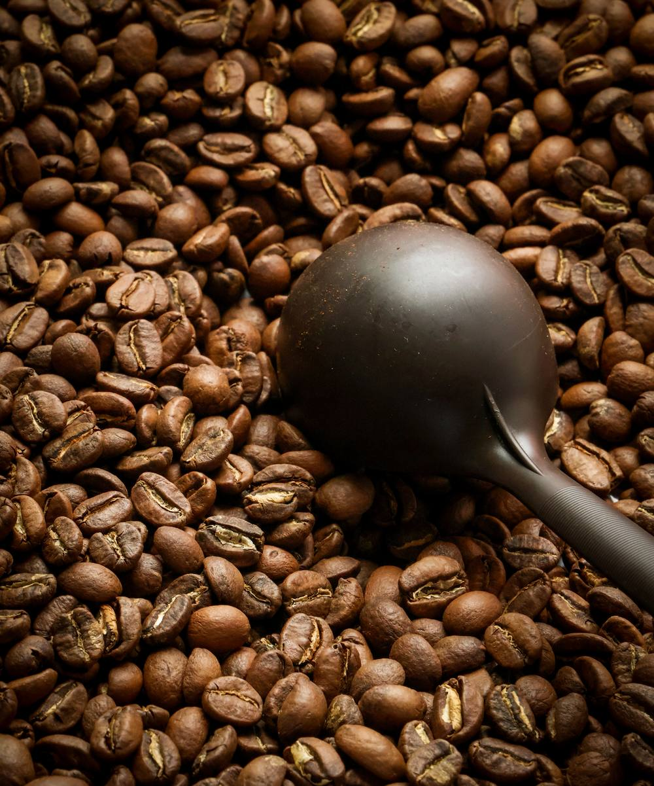
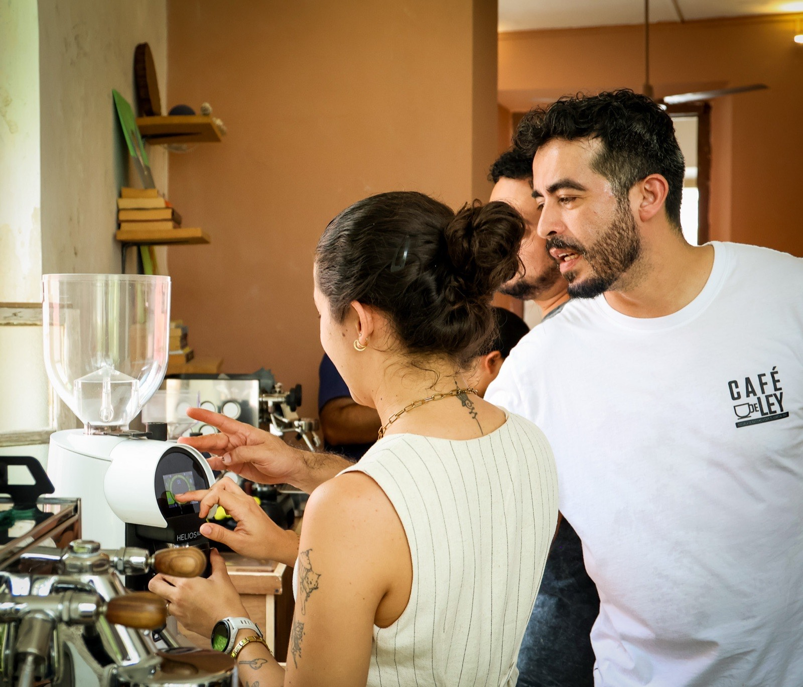
Café de Ley en Amétodo · Mérida
Del grano a la barra: aprende a calibrar el molino, extraer espresso y preparar bebidas con práctica guiada. Dos días en Mérida con un grupo pequeño e instructores certificados por la Specialty Coffee Association (SCA).
Cupo máximo 10 personas
Vive esta experiencia
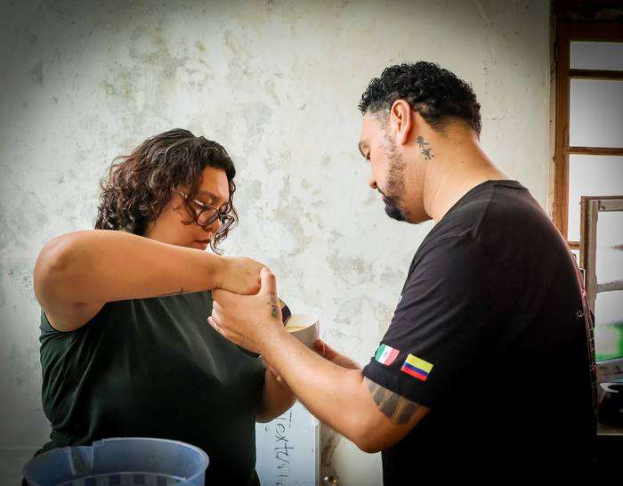
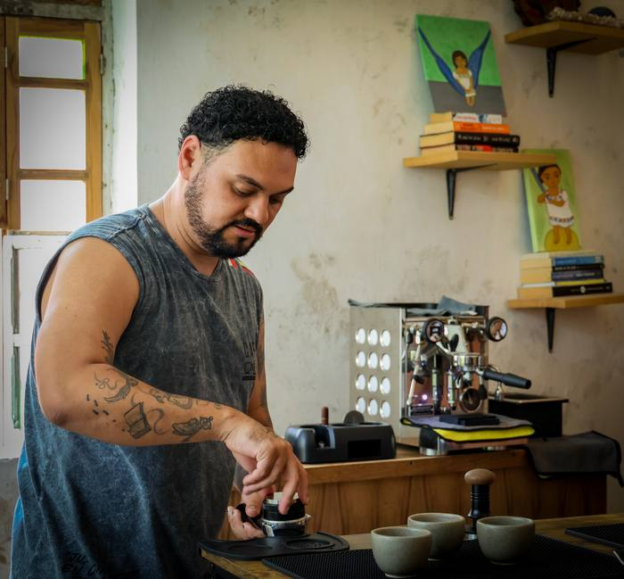
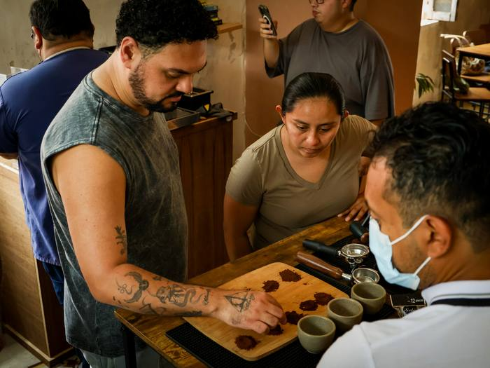
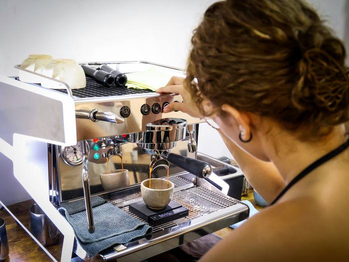
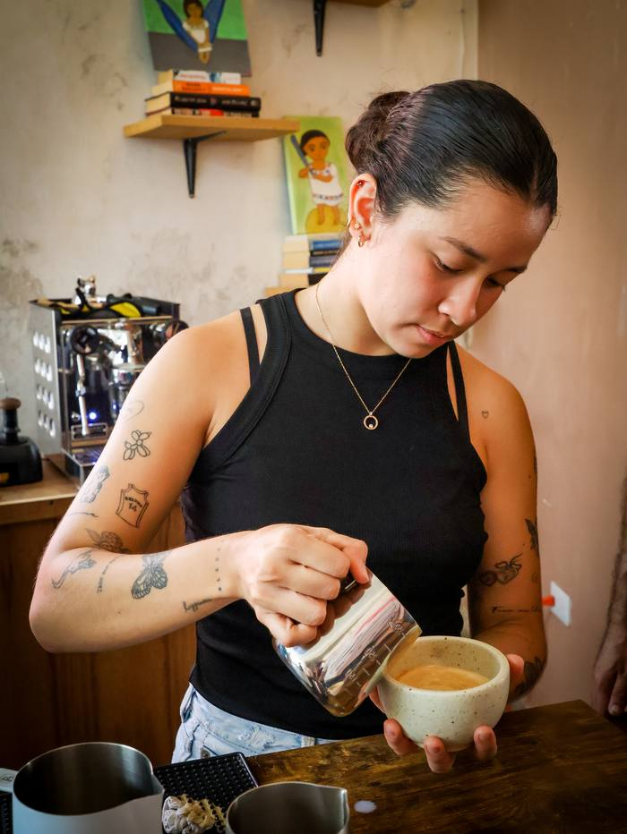
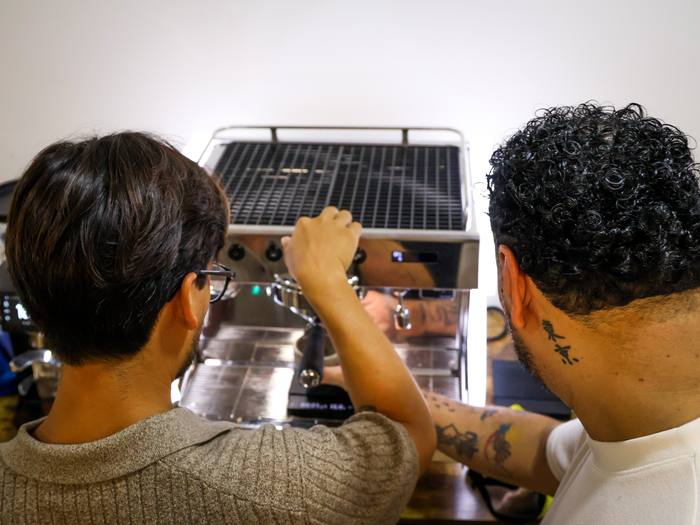
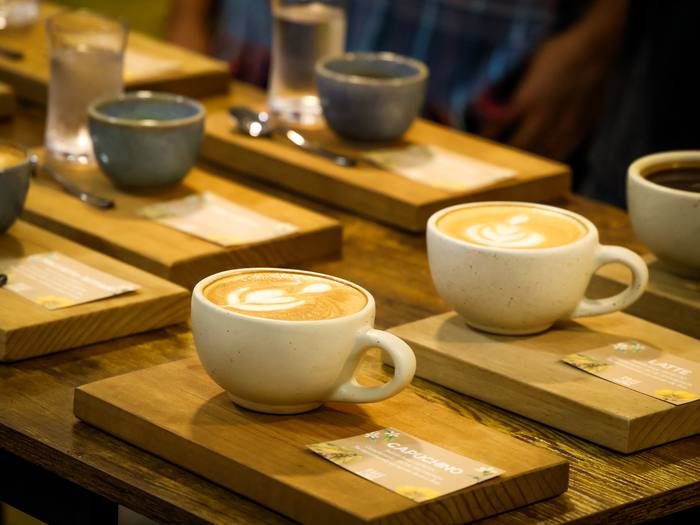
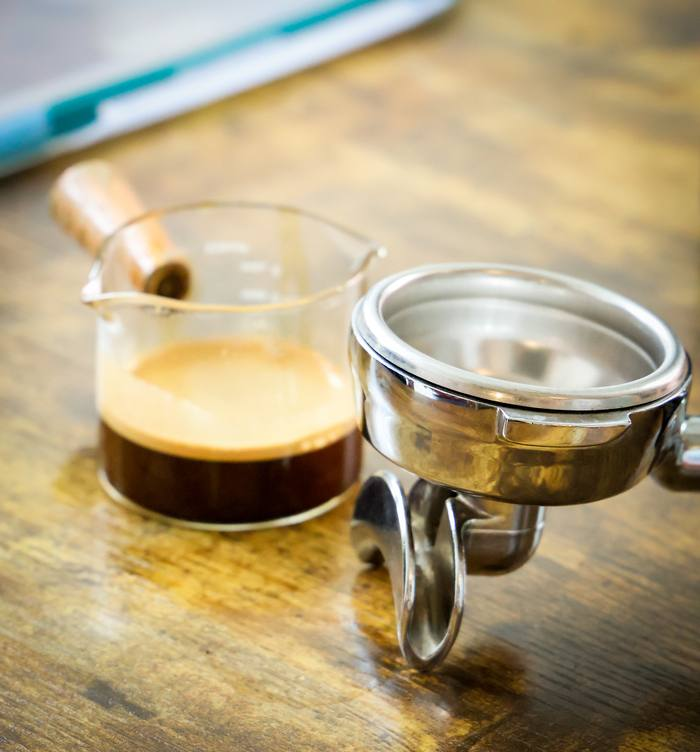
Fechas y horario
14 y 15 de noviembre de 2026 · 9:00AM a 2:00PM
Duración
2 días · 10 horas de formación presencial
Diploma
Diploma de formación de Café de Ley, en español e inglés
Cupo
Máximo 10 personas
Lo que vas a lograr
Aprenderás a reconocer las variables que cambian una extracción, ajustar la molienda y preparar bebidas con una rutina clara de servicio. El curso combina fundamentos, demostraciones y práctica en máquina.
Tres momentos del aprendizaje
Desliza para conocer cómo avanza la práctica de Barismo Básico.
Calidades, tostión y molienda: las decisiones que cambian lo que llega a la taza.

Reconoce la máquina, calibra la molienda y practica distribución, compactación y extracción.
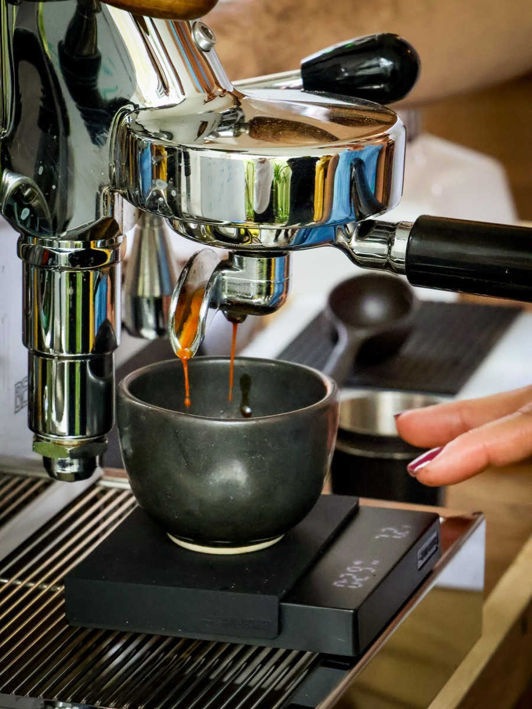
Prepara bebidas, practica el servicio, la limpieza del equipo y la texturización de leche.
Contenido del entrenamiento
Día 1 · 14 de noviembre
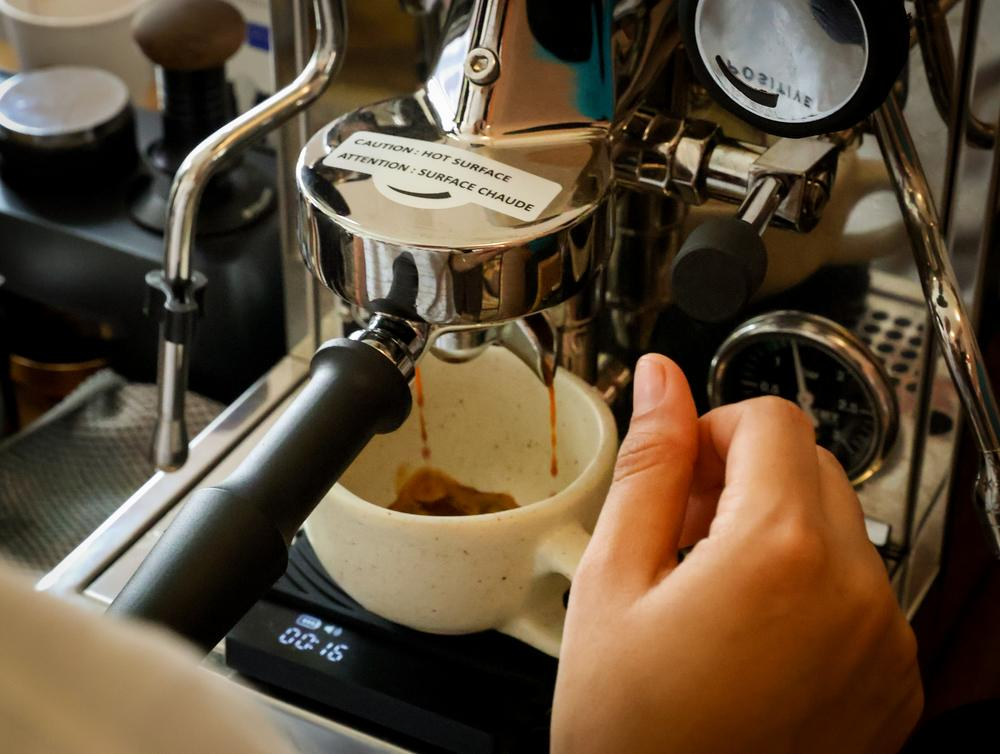
Día 2 · 15 de noviembre
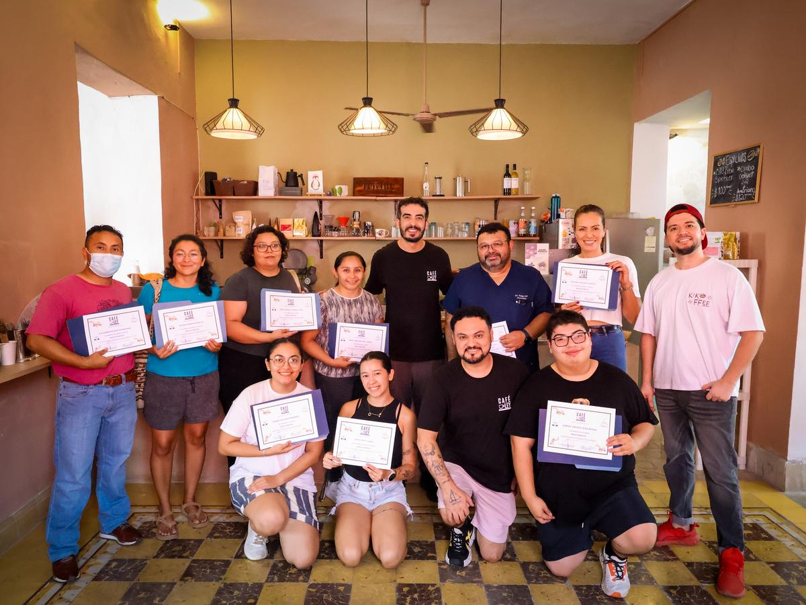
Nuestro equipo está certificado por la Specialty Coffee Association (SCA), la asociación que define los estándares internacionales de evaluación y calidad del café. Te enseñan con esa misma rigurosidad, del origen a la taza.
Al terminar el curso recibes un diploma de formación de Café de Ley, en inglés y español.
Capacitadores
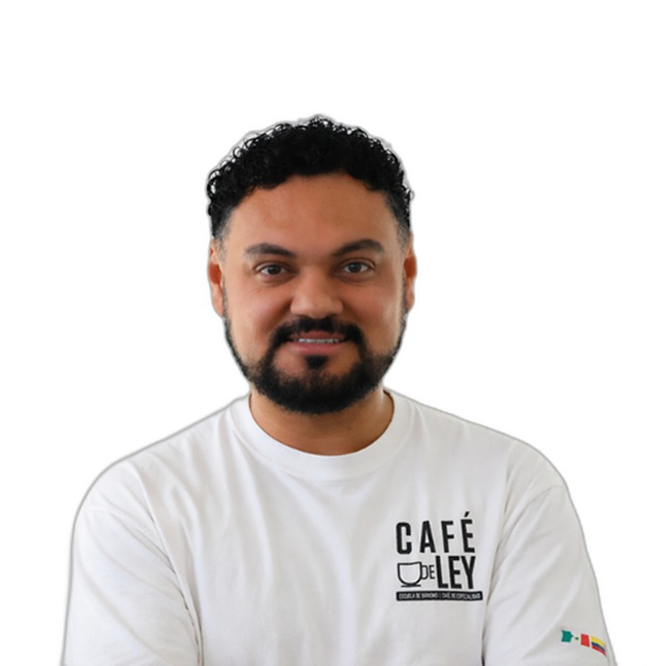
CEO Barista · Cofundador de Café de Ley
Q Grader certificado · Abogado · Estratega cultural del café
Líder del café de especialidad que combina formación profesional, certificación internacional y visión estratégica. Certificado por la Specialty Coffee Association (SCA), entiende el café como una plataforma cultural centrada en comunidad, experiencias de marca y redes internacionales.
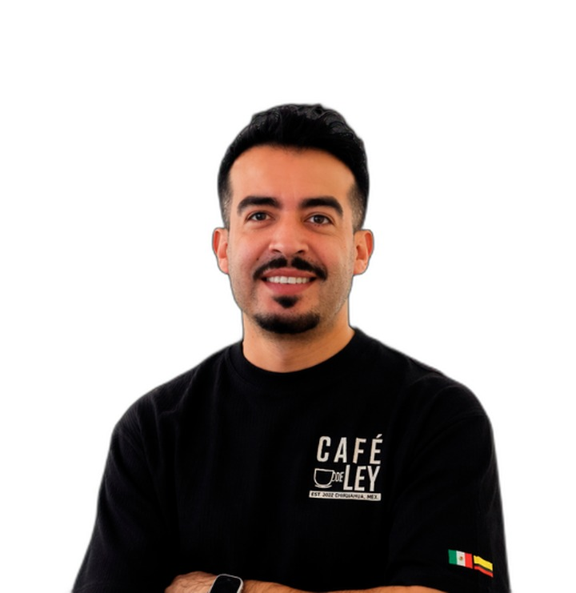
CEO Barista · Cofundador de Café de Ley
Q Grader certificado · Economista · Educador del café
Economista colombiano que dio el salto del mundo financiero al café de especialidad. Q Grader certificado por la SCA y formador certificado en México dentro del programa Conocer, lidera cursos y experiencias sensoriales en Café de Ley.
Inversión
Aparta tu lugar con un anticipo de $1,000 MXN. El resto de tu inversión ($2,200 MXN) se paga presencialmente el primer día de curso.
Inscripción y acceso
01
Envíanos el comprobante de tu depósito junto con tu nombre completo, y quedas registrado en nuestro sistema.
02
Un día antes del curso te agregamos a un grupo de WhatsApp exclusivo, donde compartimos toda la información y los entregables del curso.
03
Te esperamos el 14 y 15 de noviembre, de 9:00AM a 2:00PM, para practicar extracción, bebidas de espresso, servicio y texturización de leche.
Ubicación
Mérida, Yucatán
×
Te esperamos
Desarrolla tus habilidades con estándares internacionales y forma parte de la comunidad que impulsa la excelencia del café en México.